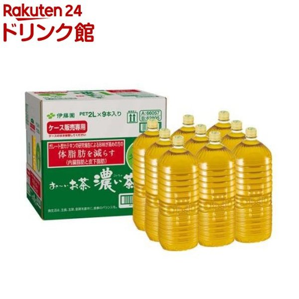
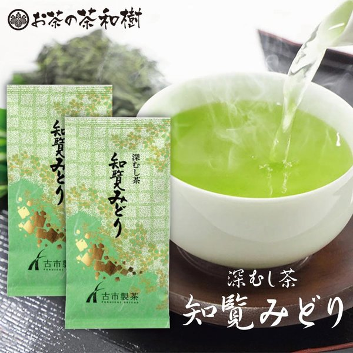
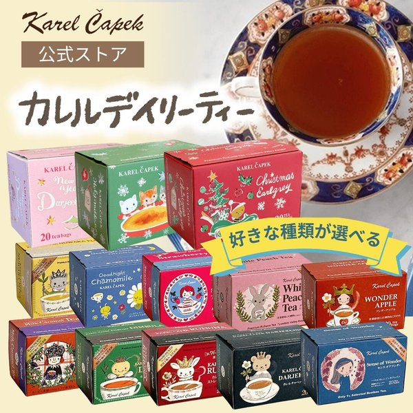
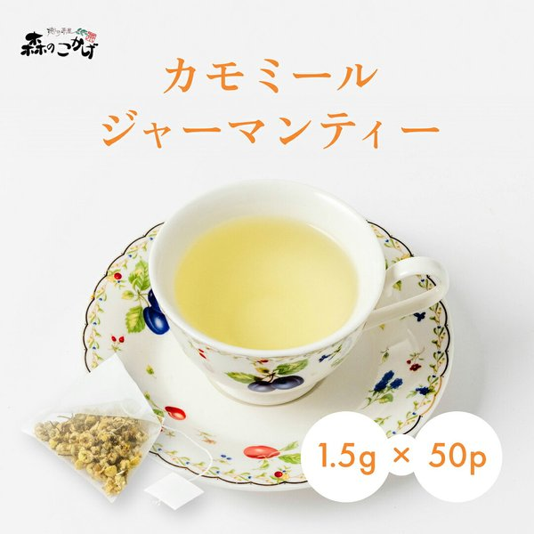
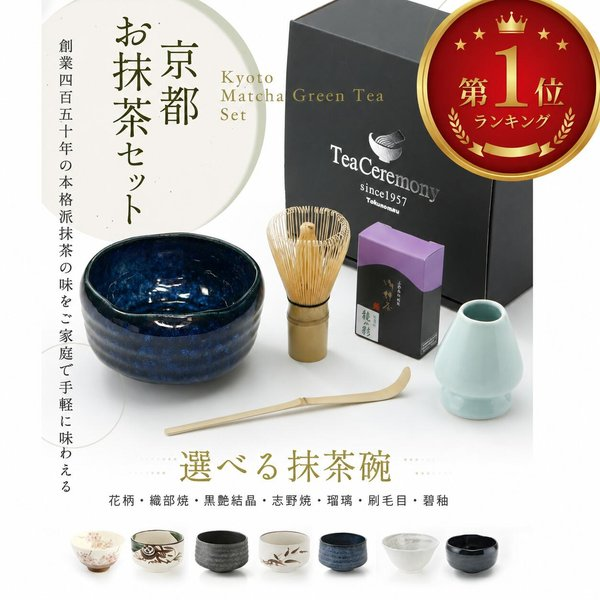
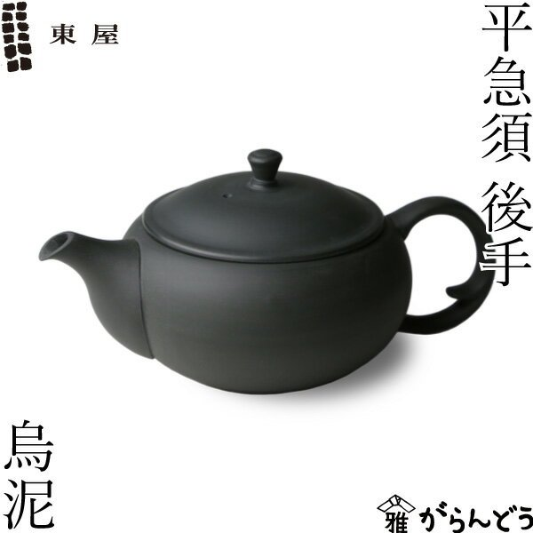
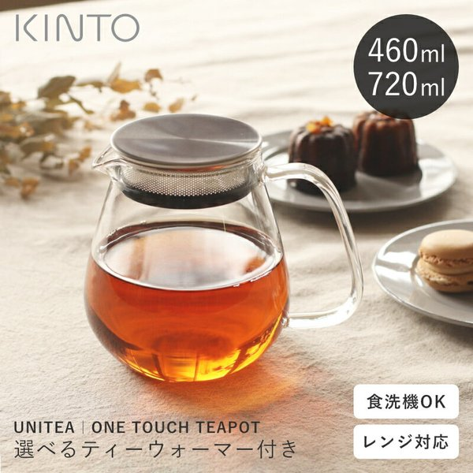
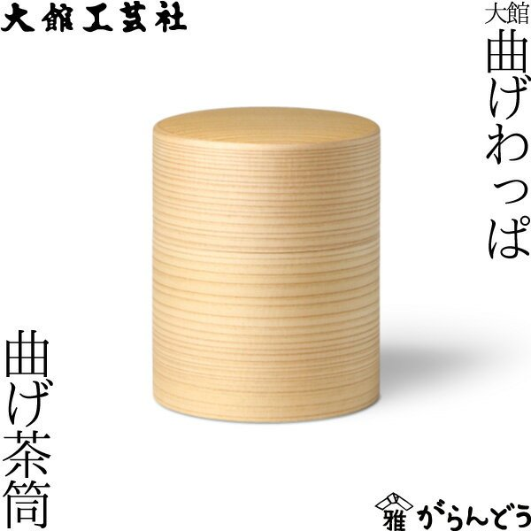
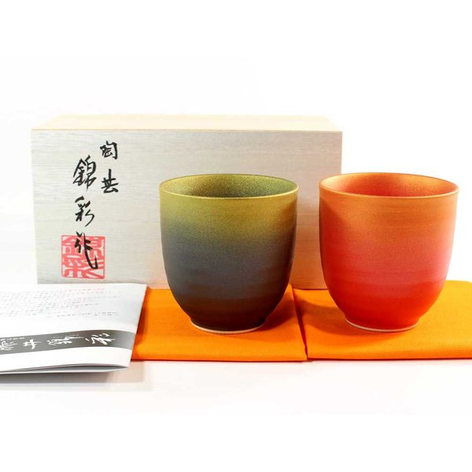
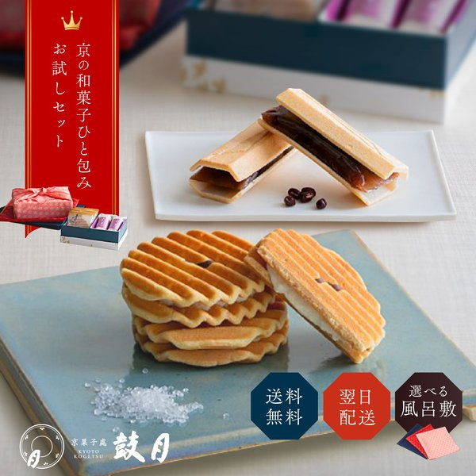

【2026年冬ギフト・おうち時間】ほっと一息！日本茶・紅茶・ハーブティー・急須＆お茶請けセットおすすめ10選
冬は、家でお茶を飲む時間がいちばん長くなる季節です。外に出る回数が減り、温かい飲み物を何杯も淹れる。だからこそ、茶葉と道具を少し見直すだけで、毎日の満足度がはっきり変わります。
選ぶ軸は3つです。毎日飲む茶葉は、値段と味のバランスで選ぶ。深蒸し茶は濃くまろやかで、食事にも合います。気分を変える茶葉は、紅茶やハーブティー。ノンカフェインのものを1つ持っておくと、夜でも飲めます。道具は、急須かガラスポットかで淹れ方が変わります。急須は茶葉を沈めて蒸らす日本茶向き、ガラスポットは茶葉を引き上げる紅茶・ハーブ向きです。そして茶筒。茶葉は袋のまま置くと香りが抜けるので、毎日飲む人ほど筒に入れたほうがおいしく最後まで使えます。お茶請けは日持ちのする和菓子を1箱あると、来客にも使えます。
本記事では、楽天市場で人気・高評価の冬のお茶とお茶請け10選を、実売価格とレビュー評価つきで写真付き紹介します。
- おすすめ10選 スペック・特徴比較表
- BEST 1｜ラベルレス おーいお茶 濃い茶 2L×9本
- BEST 2｜知覧みどり 深むし茶 100g×2本
- BEST 3｜デイリーシリーズ 20p（20種類から選べる）
- BEST 4｜カモミールジャーマンティー 50パック
- BEST 5｜京都宇治抹茶 6点セット（抹茶碗・茶筅・茶杓）
- BEST 6｜平急須 後手 烏泥（常滑焼）
- BEST 7｜UNITEA ワンタッチティーポット 720ml
- BEST 8｜曲げわっぱ 茶筒（秋田杉）
- BEST 9｜窯変金彩 湯呑みペアセットB
- BEST 10｜京の和菓子ひと包みお試しセット
- 【読者負担0円】買わなくても得する無料サービス
- まとめ：冬のお茶とお茶請け10選の選び方
| 順位 | 商品名 | ブランド | 最大の特徴・おすすめ理由 | 総合評価 |
|---|---|---|---|---|
| BEST 1 | ラベルレス おーいお茶 濃い茶 2L×9本 | 伊藤園 | ラベルレスでゴミ出しが楽 | 4.76 |
| BEST 2 | 知覧みどり 深むし茶 100g×2本 | 古市製茶 | 知覧の深蒸し茶で味がまろやか | 4.79 |
| BEST 3 | デイリーシリーズ 20p（20種類から選べる） | カレルチャペック紅茶店 | 20種類から好きな味を選べる | 4.90 |
| BEST 4 | カモミールジャーマンティー 50パック | 森のこかげ | ノンカフェインで寝る前でも飲める | 4.56 |
| BEST 5 | 京都宇治抹茶 6点セット（抹茶碗・茶筅・茶杓） | 上林春松本店 | 道具が6点揃ってすぐ点てられる | 4.63 |
| BEST 6 | 平急須 後手 烏泥（常滑焼） | 東屋（AZMAYA） | 後手で注ぐときに手首が楽 | 4.75 |
| BEST 7 | UNITEA ワンタッチティーポット 720ml | KINTO | ワンタッチで茶葉を引き上げられる | 4.66 |
| BEST 8 | 曲げわっぱ 茶筒（秋田杉） | 大館工芸社 | 秋田杉の曲げわっぱで香りを保つ | 5.00 |
| BEST 9 | 窯変金彩 湯呑みペアセットB | 藤井錦彩（有田焼） | 1客ずつ表情が違う窯変の色 | 4.93 |
| BEST 10 | 京の和菓子ひと包みお試しセット | 鼓月 | 京都の老舗の味を少量ずつ試せる | 4.63 |
ラベルレス おーいお茶 濃い茶 2L×9本

濃いめに淹れた緑茶のペットボトル、2L×9本の箱買いです。ラベルがないぶん、捨てるときに剥がす手間がなく、ゴミもかさばりません。濃い茶は味がしっかりしているので、食事にも合いますし、温めても薄くなりすぎません。冬は温かいお茶を何杯も飲む季節。急須で淹れる時間がない日でも、これが冷蔵庫にあると「とりあえずお茶」が成立します。486件のレビューで評価4.76と、箱買いの定番です。楽天市場での実売価格は約2,388円（2026年11月時点）。
- ラベルレスでゴミ出しが楽
- 濃いめで食事に合う
- 2L×9本で買い足しの手間が減る
- ペットボトルなので、茶葉から淹れる香りは出ない
知覧みどり 深むし茶 100g×2本

鹿児島・知覧の茶葉を深蒸しにした煎茶です。深蒸し茶は普通の煎茶より葉を長く蒸すので、水色が濃く、まろやかな味になります。急須に茶葉を入れてお湯を注ぐだけで、家庭の食卓の味になります。100gの袋が2本で1,692円。毎日飲むものだから、値段と味のバランスがいいものを、という人に向いています。556件のレビューで評価4.79は、リピートしている人が多い証拠です。楽天市場での実売価格は約1,692円（2026年11月時点）。
- 知覧の深蒸し茶で味がまろやか
- 100g×2本で日常使いしやすい
- 556件・評価4.79の定番
- 100gずつなので、家族で毎日飲むと1か月ほどでなくなります
デイリーシリーズ 20p（20種類から選べる）

20種類のフレーバーから1つ選べる、ティーバッグ20枚入りの紅茶です。アールグレイやダージリンといった定番から、季節のフレーバーまで揃っています。個包装なので、来客時にもそのまま出せます。紅茶は「どの味が好みか分からない」まま大きなセットを買って失敗しがちですが、これは1種類を20枚なので、気に入った味を確かめてから次の箱に進めます。418件で評価4.90と、外れの少ないブランドです。楽天市場での実売価格は約1,361円（2026年11月時点）。
- 20種類から好きな味を選べる
- 個包装で来客にも出せる
- 418件・評価4.90
- 1種類20枚なので、いろいろな味を試したい人はアソートのほうが向く
カモミールジャーマンティー 50パック

カモミールだけをティーバッグにした、ノンカフェインのハーブティーです。残留農薬検査をした原料を使っていて、寝る前や授乳中でも飲みやすいのが特徴。りんごに似た甘い香りで、はちみつを少し垂らすと飲みやすくなります。1.5g×50パック入りで2,300円。冬の夜、コーヒーの代わりに温かい飲み物が欲しいときに、カフェインを気にせず飲める選択肢として置いておくと安心です。楽天市場での実売価格は約2,300円（2026年11月時点）。
- ノンカフェインで寝る前でも飲める
- 残留農薬検査済みの原料
- 50パック入りで長く使える
- 1.5gと茶葉は控えめなので、濃いめが好きな人には薄く感じる
京都宇治抹茶 6点セット（抹茶碗・茶筅・茶杓）

京都・宇治の老舗が組んだ抹茶の入門セットです。抹茶、抹茶碗、茶筅、茶杓など6点が揃っていて、届いた日から点てられます。抹茶碗は好みのものを選べ、説明は日本語と英語の両方。茶道を習うわけではなくても、冬の午後に自分で抹茶を点てる時間は、思っている以上に気分が落ち着きます。5,800円で道具が一通り揃うので、年末年始に家族で試すのにも向いています。楽天市場での実売価格は約5,800円（2026年11月時点）。
- 道具が6点揃ってすぐ点てられる
- 抹茶碗を選べる
- 老舗の宇治抹茶
- 5,800円と入門セットとしてはしっかりした価格で、茶筅は手入れが必要
平急須 後手 烏泥（常滑焼）

常滑焼の急須を、現代の生活に合わせて作り直したモデルです。取っ手が後ろに付いた「後手」の形で、注ぐときに手首が無理な角度になりません。内側の茶こしは陶器製で、金属の網のように目詰まりしにくく、洗ってもにおいが残りにくいのが利点です。烏泥（うぐいす）の黒い質感は、テーブルに置いたときの見た目も落ち着きます。急須は毎日使うものなので、注ぎやすさと洗いやすさで選ぶと後悔しません。楽天市場での実売価格は約7,700円（2026年11月時点）。
- 後手で注ぐときに手首が楽
- 陶器の茶こしで目詰まりしにくい
- 常滑焼・日本製
- 7,700円と高く、レビュー48件なので食洗機は使えない前提で扱いたい
UNITEA ワンタッチティーポット 720ml

耐熱ガラスのティーポットです。茶葉を入れたインナーを引き上げる「ワンタッチ」式で、抽出が終わったらそのまま上に上げておけます。茶葉が入りっぱなしにならないので、紅茶も緑茶も渋くなりません。720mlは2人分にちょうどよく、来客時にも使えます。食洗機と電子レンジに対応していて、手入れが簡単。955件のレビューで評価4.66と、ガラスポットの中では最も実績のある部類です。楽天市場での実売価格は約2,640円（2026年11月時点）。
- ワンタッチで茶葉を引き上げられる
- 720mlで2人分にちょうどいい
- 食洗機・レンジ対応
- ガラス製なので、落とすと割れる。子どもがいる家は置き場所に注意
曲げわっぱ 茶筒（秋田杉）

秋田杉を曲げて作った、木の茶筒です。茶葉は湿気とにおいに弱く、袋のまま置いておくと香りが抜けていきます。気密性の高い木の筒に入れておくと、最後まで香りが持ちます。秋田杉は軽く、木目がきれいで、台所の棚に置いても絵になります。茶葉を買う量が増えた人、または緑茶を毎日飲む人にとっては、茶筒は「あると違う」道具です。11,000円と高いぶん、長く使う前提の品です。楽天市場での実売価格は約11,000円（2026年11月時点）。
- 秋田杉の曲げわっぱで香りを保つ
- 気密性が高く湿気を防ぐ
- 長く使える日本製
- 11,000円と高価で、レビュー12件。水洗いできないので乾拭きで手入れする
窯変金彩 湯呑みペアセットB

有田焼の湯呑み2客セットです。窯の火加減で色が変わる「窯変」の技法を使っていて、1客ずつ色合いが違います。金彩が入っているので、来客時にも出せる格があります。木箱入りで、夫婦や親への贈り物にもそのまま使えます。普段使いの湯呑みは100円ショップでも買えますが、毎日手に取るものだからこそ、少しだけいいものにすると、お茶を飲む時間の密度が変わります。14件とレビューは少ないものの評価4.93です。楽天市場での実売価格は約4,950円（2026年11月時点）。
- 1客ずつ表情が違う窯変の色
- 木箱入りで贈り物にも使える
- 有田焼・日本製
- レビュー14件と少なく、手作りのため色と形に個体差がある
京の和菓子ひと包みお試しセット

京都の老舗、鼓月の和菓子を少量ずつ試せるセットです。個包装なので、来客時のお茶請けにも、仕事の合間の一服にも使えます。日持ちのするお菓子が中心なので、年末年始に少しずつ出せます。お茶請けは「甘すぎないもの」が使いやすい。和菓子は洋菓子より甘さが控えめで、緑茶とも紅茶とも合います。121件のレビューで評価4.63。手土産の定番として名前を知っておくと、急な訪問のときにも困りません。楽天市場での実売価格は約2,380円（2026年11月時点）。
- 京都の老舗の味を少量ずつ試せる
- 個包装で来客にも出せる
- 緑茶にも紅茶にも合う
- 生菓子に近いものは日持ちが短いので、届いたら早めに食べきりたい
この記事の商品を買う前に、まずは無料で得する選択肢をチェック。どれも登録・利用は0円で、無料期間中に解約すれば料金はかかりません。読みたい雑誌がある人、ポイントを貯めたい人、アンケートなら気軽という人、それぞれに合うものを選べます。
初回31日無料・無料期間中に解約すれば0円 → 楽天ポイントモール｜登録無料で毎日ポイ活
買い物なしでもポイントが貯まる無料サービス → 楽天インサイト｜アンケートに答えてポイント
登録無料・すきま時間のアンケートで貯まる → 楽天カード｜年会費永年無料
新規発行・年会費ずっと0円 →
4つのサービスの違いと使い分けは「出費0円で得する！買わずにポイントが貯まる無料サービス厳選4選」でまとめています。
💡 まとめ：冬のお茶とお茶請け10選の選び方
冬のお茶は、毎日飲むものと、気分を変えるものを1つずつ持つとちょうどよくなります。毎日飲むなら深蒸しの煎茶。濃くまろやかで、食事にも合い、値段も続けやすい。気分を変えたいときは、紅茶かカモミールのようなノンカフェインのハーブティーを。夜に飲むなら、カフェインの有無を必ず確認してください。道具は、日本茶なら急須、紅茶やハーブならガラスポット。急須は後手の形だと注ぐときに手首が楽で、陶器の茶こしは目詰まりしにくいです。茶葉の量が増えたら茶筒を。香りが最後まで持ちます。そしてお茶請けの和菓子を1箱。個包装なら来客にも出せて、年末年始に重宝します。贈り物にするなら、湯呑みのような毎日使う器が喜ばれます。
楽天市場では「5と0のつく日」や「お買い物マラソン」などのキャンペーンに合わせて購入すると、ポイント還元が最大化してお得に手に入ります。ぜひチェックしてみてくださいね。